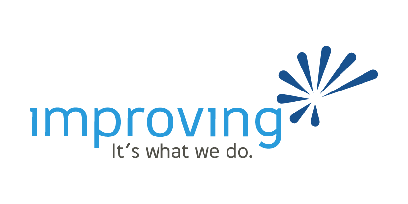
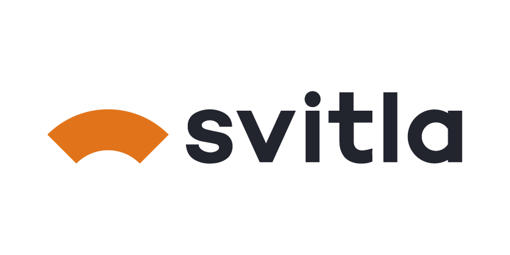

Cómo leer este reporte
Este documento recorre los hallazgos de la encuesta como una sola narrativa, de lo general a lo particular. Empieza por la mediana del mercado, sigue con las palancas que suben el sueldo, entra a la brecha de género, pasa por la IA y cierra con la cuenta humana.
Está escrito en español de México, en oraciones completas y con el dato a la vista. Cada cifra se reproduce desde el volcado de respuestas.
Metodología y límites
- Muestra autoseleccionada, no probabilística. Describe a quienes quisieron responder, no al mercado entero, y no se puede ponderar a la población. La encuesta sigue abierta, así que las cifras son preliminares.
- La mayoría de las comparaciones son asociaciones, no efectos causales. Un lenguaje, una ciudad, una modalidad o una certificación marcan dónde trabaja la gente, no son palancas que se accionen solas. No las presentamos como causas.
- Se muestran cerca de treinta cortes. Algunos son exploratorios. Las celdas con menos de unos 15 casos se señalan como direccionales y pueden ser ruido. Personas no binarias excluidas de la inferencia por tamaño de celda.
- Donde importa, se reportan intervalos de confianza bootstrap al 95%. El resto son estimaciones puntuales.
- Corte restringido a residentes en México, el 90% de la muestra, para que el marco "tech mexicano" coincida con los datos. Salario base mensual normalizado a pesos. Dólares a tipo de cambio 18.5, estable entre 17 y 20. Transformación logarítmica para las regresiones. Atípicos fuera de ~$8k a $400k recortados.
- La brecha de género es el único punto con un modelo de controles, una descomposición tipo Oaxaca-Blinder sobre experiencia, inglés, nivel y familia de rol. El efecto queda acotado entre ~10% emparejando todo y 37% sin ajustar, y el residuo totalmente ajustado tiene un intervalo de confianza que toca el cero. No es discriminación probada. Controlar por nivel y rol, que son en parte consecuencia del mismo sesgo, probablemente subestima el efecto, así que el valor real vive en ese rango.
Detalle completo en docs/GENERAL_FINDINGS_2026.md y docs/GENDER_FINDINGS_2026.md.
Gracias a Improving, Mobiik y Svitla por difundir esta encuesta en la comunidad tech.

